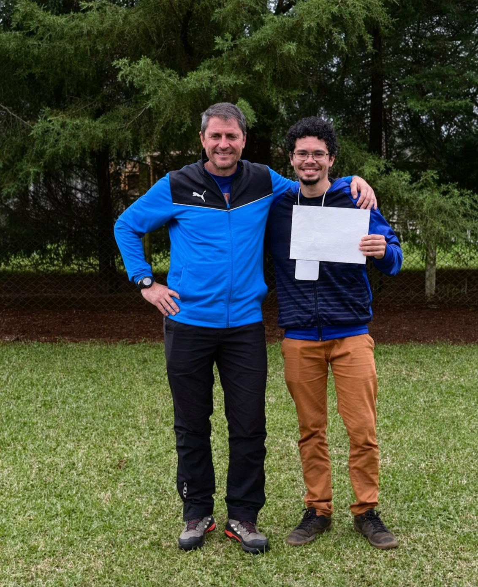
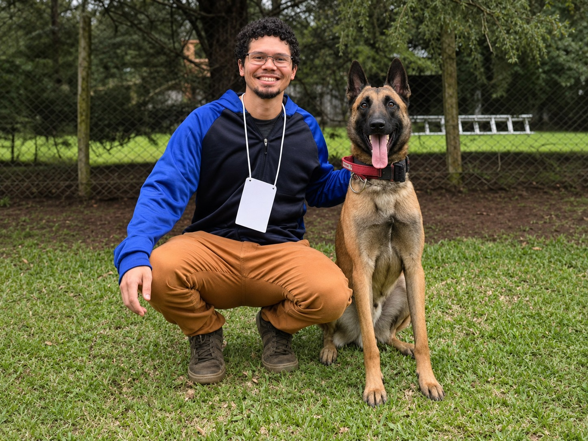
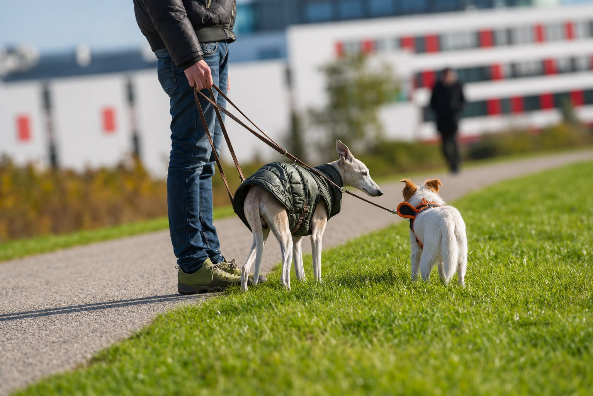

Adestramento canino
Passeios mais leves. Uma casa mais tranquila.
Imagine curtir o passeio com a guia relaxada e receber visitas com mais calma. Com o adestramento domiciliar, você aprende a praticar bons hábitos com seu cão nas situações que fazem parte da sua rotina.



Serviços
Como posso ajudar
Escolha a situação que você gostaria de melhorar primeiro.
Adestramento domiciliar
Trabalhe hábitos no ambiente em que seu cão vive.
Obediência básica
Pratique comandos e combinados do dia a dia.
Passeio sem puxões
Trabalhe a caminhada com a guia mais relaxada.
Reatividade
Identifique situações que provocam latidos ou avanços.
O primeiro passo é contar o que acontece hoje.
Qual momento você gostaria de aproveitar mais com seu cão? Pode ser sair para caminhar, receber alguém em casa ou simplesmente ter mais calma na rotina.
Pedir um orçamentoConte sobre seu cão
Diga em que situações a dificuldade aparece. Um exemplo do dia a dia já ajuda a começar a conversa.
Combine por onde começar
Converse com o Andrey sobre o que você quer trabalhar primeiro e como o atendimento pode se encaixar na sua rotina.
Pratique no dia a dia
Repita os exercícios nos momentos em que eles fazem diferença, como na saída para o passeio ou na chegada de uma visita.
Perguntas frequentes
Deslize para o lado para ver mais perguntas.
Vamos conversar sobre seu cão?
Escolha o que você gostaria de trabalhar. Se ainda tiver dúvidas sobre o serviço, conte um pouco da rotina do seu cão na conversa.
Ligar para (51) 98145-9058